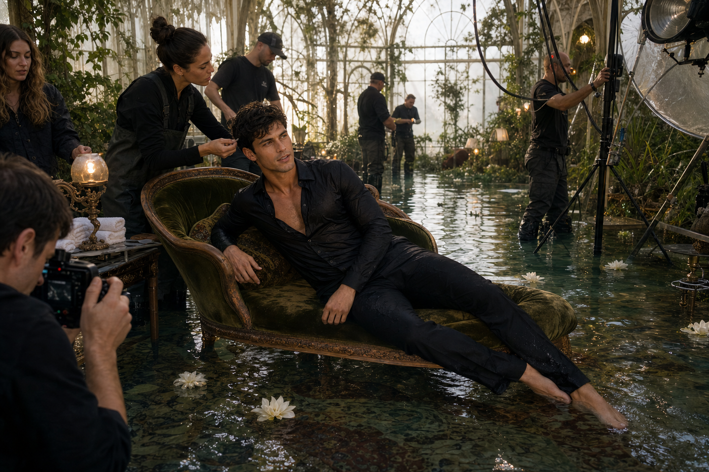

Selected work
Explore the career →


Model
Fourteen years of campaign, runway and editorial work. Fashion is the centre of the public archive.
Enter the model archive →Songwriter
Four released songs, written alone and made public in the voices of Dua Lipa, Olivia Rodrigo, Sam Smith and Rosé.
Read the songs →

Actor
Five on-camera performances and a voice archive spanning animation, games, documentary and literary audio.
View screen and voice credits →Awards
FashionModel of the Year × 3
FilmVenice Best Actor
ScreenTwo-time Emmy winner
WritingIvor Novello